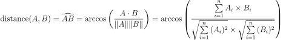

Finding Similar Items - Images
Goal
In this exercises we will implement a probabilistic data structure which speeds up the search for items similar to the query. In particular, we will build a data structure to find images similar to a given image.
Prerequisites
In principle, the content presented during the lecture on Friday November 7 suffices to implement this task. However, it is certainly beneficial to study the corresponding text in chapter 3 of the Mining of Massive Datasets book. You can also watch the videos of the coursera course related to LSH (in week 2).
Task
The task consists of three parts. First, you need to make an exact search. Then you create the approximate search and finally you need to evaluate its quality. This task is performed as a pair. The groups will change during the course.
For this task, we will use the images from the cifar-10 dataset, which can be downloaded from the university of Toronto.
To measure the distance between two images, we use the angle between their vector representations.
More concrete, we will use what is called cosine distance in the course book, and 1 - [Angular similarity] on Wikipedia.
Wikipedia also gives a few remarks about the confusing name of this metric.

You are free to work using the programming language you want.
###Part I### Implement an exact nearest neighbor search. In order to do this you will need to
- Load a set of images in memory
- Load one more image (the query -
Dq) - Calculate the distance to each of the images in the set
- Find the image (
De) in the set with the smallest distance to the query image
###Part II### Implement an approximate nearest neighbor search. Using random hyperplane hashing, it is possible to reduce the amount of images which we need to compare with.
First, try to implement the method using just one hyperplane, the algorithm goes roughly as follows:
- Load a set of images in memory
- Create a random vector, which defines a hyperplane
- Find out on which side of the hyperplane each image is. Create a dictionary/map which associates
aboveandbelowwith the set of images which are above and below the hyperplane.- An image which is on the same side as the random vector, will have a positive dot product when multiplied with it.
- An image on the other side will result in a negative dot product.
- An image exactly on the hyperplane (or very close when calculating with floating point numbers) will result in a zero dot product. This is however so rare that you can just return above or below at random.
- Load one more image (the query)
- Find the subset in which to look by finding out whether the query lies above or under the hyperplane.
- Now, perform the search as you created in part I, but using only the subset of images, resulting in the image
Da.
Once this works (commit to git), you should extend it to multiple hyperplanes.
For example, for two hyperplanes, instead of only having a separation of the space in two parts, the space gets split in 4.
In that case, the classes will be (above, above), (above,below), (below, above), and (below,below).
Because of representation options, you can limit yourself to up to 60 hyperplanes.
###Part III### The method developed in part two might be faster than the linear search, but a certain amount of error is made. The goal of this part is to find out the size of this error. To measure the error, we will simply calculate the average absolute error for a set of 100 random queries.
Work as follows:
- Load the images in memory
- For numberOfHyperplanes in [1, 2, 4, 8, 16, 32]: #You can go up till 60 if it does not take too much time to compute
- Create the data structure from Part II with numberOfHyperplanes hyper planes
- For 100 random queries #Use the same 100 random queries each time.
- Find the result and distance for the exact nearest neighbor search
- Find the result and distance for the approximate search
- Calculate the average error for the current number of hyperplanes

Create a chart in which you plot the error in function of the number of planes.
Returning the task###
- Everything is returned in a git repository
- Yousource : https://yousource.it.jyu.fi/
- For the first task : make a repository and add the teacher as a collaborator
- If unfamiliar with git
- Read The Pro Git book on-line and instructions on yousource
- Ask in group
- The deadline for this task is Sunday November 16.
Hints
-
Use small sets (10000 images or less) of data during development.
-
For the programming language, you might just want to choose the one you are most familiar with. Depending on the chosen language the teacher will be able to help more (or less) with language specific issues. The datasets are somewhat easier to read in Python and matlab. In other languages the binary format can be parsed fairly easily.
-
Be careful when using a library to calculate the cosine distance. Read the wikipedia article or the section in the book about the distance. Most built-in implementations will calculate something different.
-
When calculating the arccos, it might happen that due to rounding errors the argument becomes slightly greater than one. The evaluation will (should) then fail. You can check the argument before, and if it is slightly greater than one, make it one.
-
Randomized algorithms are difficult to debug. Make it somehow possible by fixing the seed of the random number generator. At least each run will be the same.
-
Be careful with integer overflows and automatic type conversion (especially in dynamically typed languages).
-
You have many choices to represent the result of hashing using multiple hyperplanes. The most performant one is the use of a integer with 64 bits, where each bit represents one hash function. Then,
1isaboveand0isbelow. Alternatively, you can use a type which can be used in a map/dictionary in the language you are using (like a tuple in python or a list in Java). -
When you make a query using an image which is itself in the dataset, you should be able to find exactly that image.